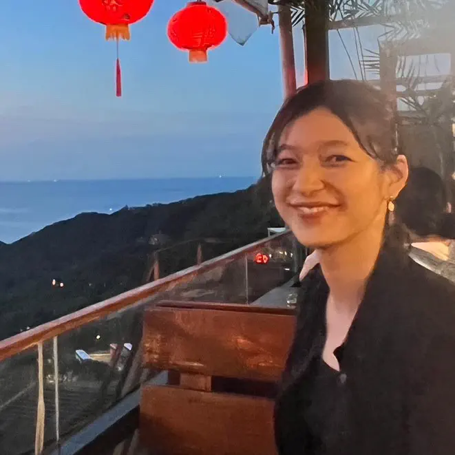
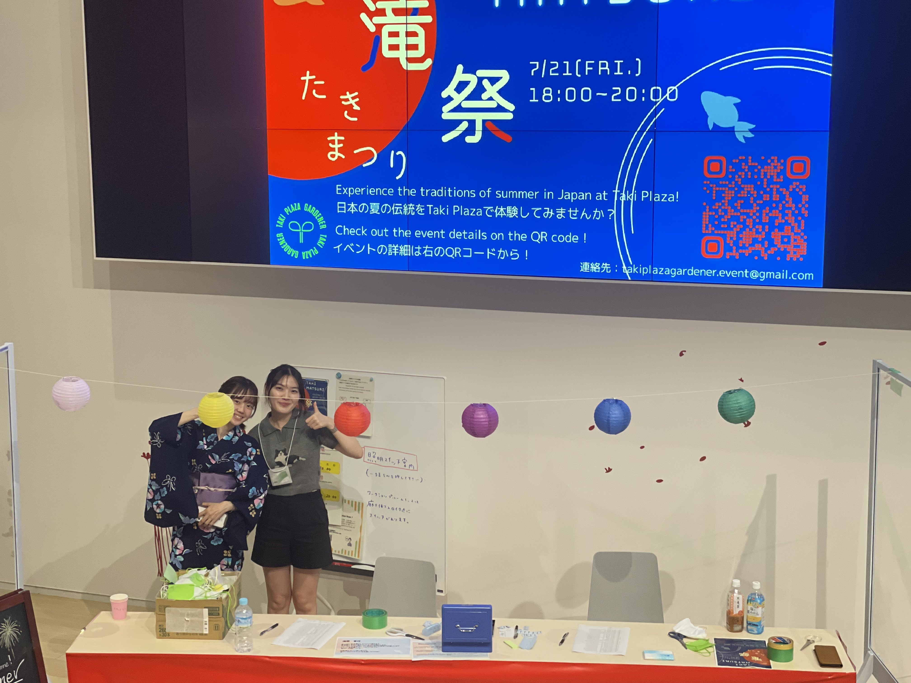

イベント班

イベント班 班長
藤井 咲衣
学年：B3
所属：工学院
経営工学系
趣味・特技
料理・アイドル鑑賞・散歩
ほかのメンバーから見たらどんな人？
にこにこしながらしっかりしててすごい
ありがとう
酒豪
イベント班はTaki Plaza内で行われるイベントの企画・運営を行っています。他班と比べて活動の規模が大きく、TPGの顔となる班です。
活動内容
イベントのアイデア出しから当日運営まで全て自分たちで行い、班員たちを巻き込んで自分がやりたいことを形にすることができます。 イベントでは東工大内の様々なサークルとコラボすることがあるため、渉外の能力も身につきます。

今年度は昨年度に引き続き若葉祭(新歓イベント)、TakiFes(学内のサークルによる音楽・エンターテインメントイベント)、 工大祭への出店を行い、今年度は新たに滝祭(国際交流イベント)を開催しました。
それぞれのイベントの詳細は本ホームページ内の「Event」に掲載されているので、興味のある方はぜひご覧ください！
もちろん新たなイベントの企画もできます！
活動頻度
毎週火曜日17：30～19：00に定例会を行っています。 イベントの直前には別途会議を開くことがあります。 長期休み中は不定期。